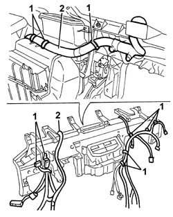
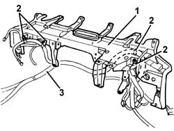

5505C35 intergrated instrument under facia and front air bag wiring - r r with fouling parts removed
- Path
- Procedures > 55 ELECTRICAL EQUIPMENT > 5505 ELECTRICAL CIRCUIT FOR INSTRUMENTS/INDICATORS > 5505C vehicle compartment wiring > 5505C35 intergrated instrument under facia and front air bag wiring - r r with fouling parts removed
- Kind
- repair procedure (removal / refitting; the operation number is the code)
- Applies to
- all engines; all production periods
- Interactive page
- https://sloeber94.github.io/elrnDB-a147/en/#/3025495
Applies to: all engines; all production periods
 Removing
Removing
 Refitting
Refitting1. Disconnect the retainers and the bands securing the dashboard wiring from the crossmember and from the air conditioning casing.
2. Remove the dashboard wiring.

Applies to: all engines; all production periods
Refitting
RemovingCheck that the wiring is undamaged and that the individual conductors are firmly attached to the connections.
Check that the connections are fitted with anti-slip devices (secondary lock).
If necessary, check the continuity.
Position the dashboard wiring and secure it to the crossmember and to the air conditioning casing using the retainers and bands.
Applies to: all engines; all production periods; only with equipment: Guida a destra
Removing
Refitting1. Remove the dashboard trim supporting crossmember.
2. Disconnect the wiring retainers.
3. Keep the wiring.

Applies to: all engines; all production periods; only with equipment: Guida a destra
Refitting
RemovingCheck that the dashboard and Air Bag wiring is not damaged and that the individual conductors are correctly fastened to the connectors.
Check that the connections are fitted with anti-slip devices (secondary lock).
Connect the dashboard wiring retainers to the crossmember.
Place the dashboard crossmember and wiring in position.